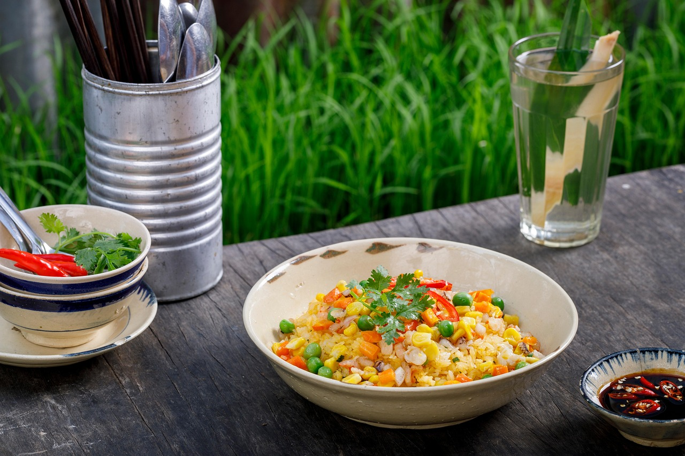

Odin Recipes
Home
Fried Rice

Description
Highly customizable, fried rice is a staple in all of Asia. The base is usually the same: Rice, eggs, onions. This version uses lap cheong and plenty of aromatics.
Ingredients (about 2 servings)
The Base
- Rice: 300-350g cooked the day before.
- 2 Lap Cheong sausages. Alternatively: Any protein of your liking.
- 2 eggs.
- 1 Onion.
- 1/2 cup peas.
- 1/4 bell pepper.
- Aromatics:
- 3-4 cloves garlic, finely minced.
- 1 small knob of ginger. About 1-2cm, finely minced.
- 2-3 scallions (whites for frying and greens for garnish).
The Seasoning
- Salt and white pepper to taste.
- 1 tsp five spice powder.
- 1 tbsp chili powder.
- 1 tbsp MSG.
- 2-3 tbsp soy sauce.
- 1 tbsp oyster sauce or sugar.
- 1 tbsp sesame oil.
Steps
- Fry Lap Cheong in a wok with a bit of oil on medium-high until crispy. Remove from wok.
- Lower heat to medium-low and fry onions until glassy.
- Add peas and bell pepper. Fry until softened.
- Add aromatics and fry until fragrant.
- Crack eggs into the wok and scramble until just starting to set.
- Add the cooked rice, breaking up clumps that form.
- Add seasonings and mix thoroughly. Adjust to taste. Be sure to pour soy sauce around the edges of the wok. This allows the sauce to char and add depth to the dish.
- Return Lap Cheong to the wok and mix thoroughly. Turn off heat and drizzle sesame oil on top. Mix again.
- Plate and garnish with scallion greens. Enjoy!